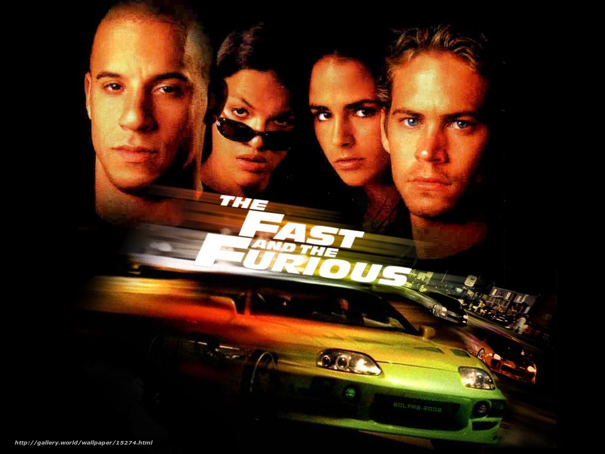
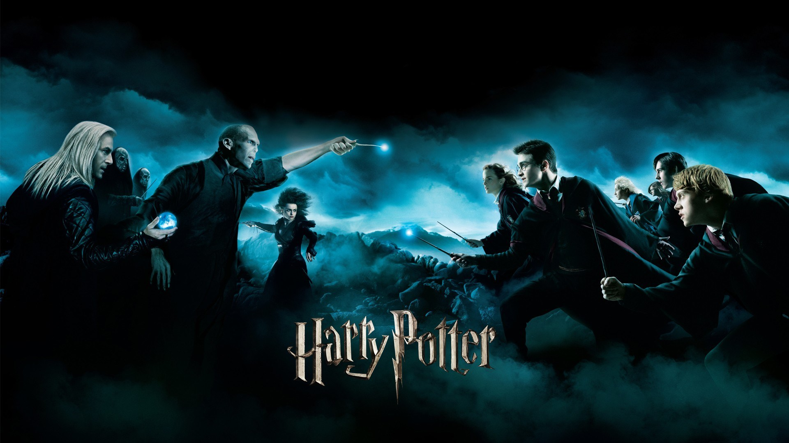

Agora um pouco sobre mim
Meus gostos musicais
Como preferência eu escolhi como cantora/cantor preferido o rapper Tupac Shakur
Um pouco sobre Tupac
Tupac Amaru Shakur (1971-1996), conhecido por “2Pac” ou “Pac”, nasceu no bairro de East Harlen, Manhattan, Nova Iorque, Estados Unidos.
Além de sua carreira no rap, foi um ator bastante promissor e um ativista social. Grande parte dos sons de Shakur falavam sobre crescer no meio da violência e miséria dos guetos, racismo, outros problemas sociais e de conflitos com outros rappers durante a lendária rivalidade entre as costas leste e oeste.
Meus jogos
Minha preferência são os seguintes jogos:


Meus filmes
Esses são os filmes que mais me agradaram
| Velozes e Furiosos |
|
 |
| Harry Potter |
|
 |
| Divergente |
|
| Amanhecer Violento |
| Coach Carter |
| Meu Nome é Radio |
| Sempre ao Seu Lado |
| Creed |
| Star Wars |
- Futebol
- Basquete
- Boxe
- Tocar violão e pandeiro
- Jogar Basquete
- Assistir filmes e séries
- Jogar vídeo-game